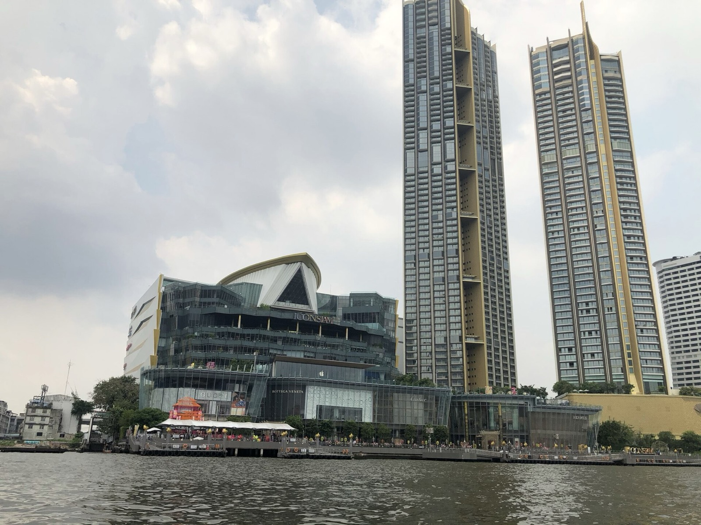
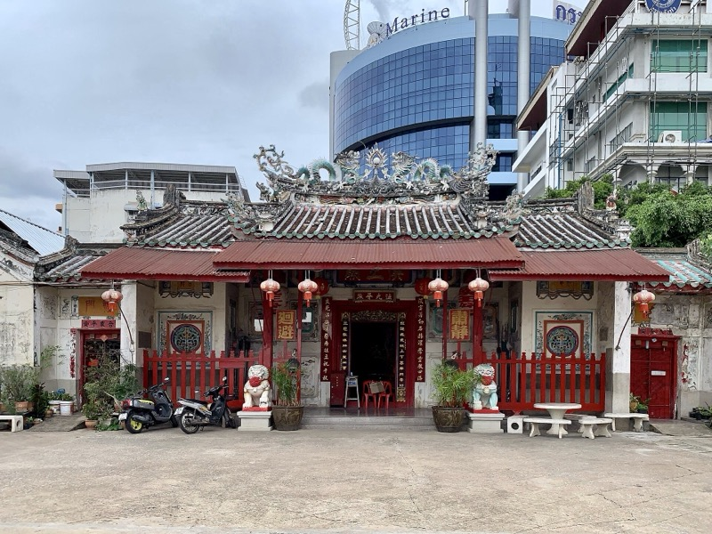
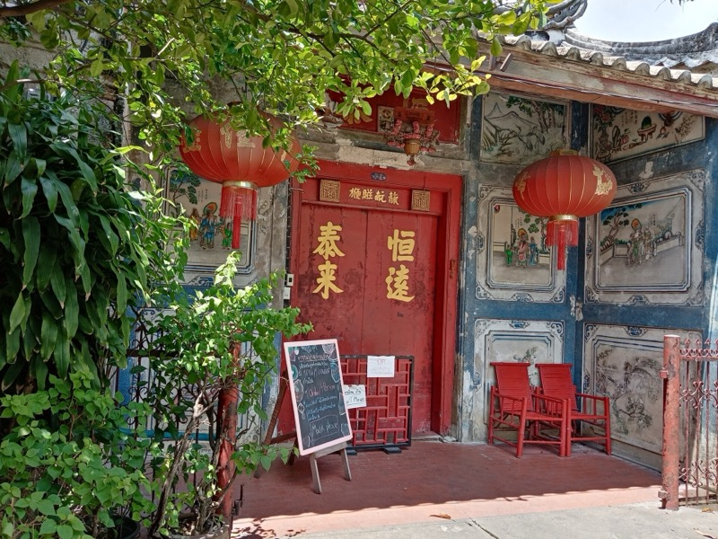

10:00
9/27 週日
Song Wat 到河邊，夜船或 Nobu
自由日。下午兩條路線、晚餐三選一、夜生活四選一。



硬性時間
- Hong Sieng Kong 10:00-22:00
- Song Wat 咖啡多數 09:00-17:00
- Warehouse 30 約 11:00-20:00
- ICONSIAM 10:00-22:00
- ICONSIAM 水舞秀 18:30 / 20:00
- Chao Phraya Princess 夜船 ICONSIAM 碼頭 check-in 18:30、開船 19:30、回 21:30
- Nobu 最後訂位 21:30
- SEA LIFE 10:00-20:00
- 日落 18:20
今天是自由日，把你點名的文藝點跟河邊全放這裡：Song Wat 老街咖啡、ICONSIAM、她原本的湄南河夜船、Nobu。下午給你「河邊」跟「Siam 商場群」兩條路線選，晚餐三選一，夜生活四選一。
10:30
Hong Sieng Kong 宏成功 早午餐
- 目的
- 兩百年的中式老宅，老榕樹直接長進屋裡，庭院面昭披耶河。是 Talat Noi 老城復興的代表作，白天是咖啡廳＋餐廳，晚上是酒吧。
- 怎麼玩
- 坐河邊庭院位，點泰式早午餐＋一杯咖啡，慢慢吃 60 分。室內每一間房都能拍。
- 注意
- 10:00-22:00。週日早上會有人潮，10:30 到剛好。
11:45
So Heng Tai 蘇興泰宅
- 目的
- 230 年的廣東式四合院，曼谷最老的華人宅邸之一，中庭現在是一座潛水訓練池。私人住宅開放參觀，點一杯飲料就能坐在裡面。
- 怎麼玩
- 進門點飲料（60-100 銖）→ 中庭坐一下 → 看二樓木雕。20 分鐘。
- 注意
- 輕聲、不要進沒開放的房間。
12:15
Song Wat 老街咖啡巡禮Time Out 全球 40 酷街區
- 目的
- 你點名的。中國城最安靜的一段：1.2 公里河岸老倉庫街，2023 年被 Time Out 選為全球 40 個最酷街區之一。老米倉、香料行改成單品咖啡館、藝廊、選物店，牆上是國際壁畫家的作品，旁邊還是五十年的滷鵝攤。「Made in Song Wat」是這裡自己長出來的創意聚落。
- 怎麼玩
- 從 Song Wat 東端往西走：Pista（2026 年最紅，開心果奶咖啡，可以選伊朗/土耳其/美國產地的開心果）→ 沿路看壁畫 → Urai 滷鵝（六十年家族配方，午餐第二輪）→ Naam 1608（藏在寺廟後面河邊小巷的秘密咖啡廳，安靜到不像中國城）。抓 90 分。
- 注意
- 路窄店小，走路不要叫車進去。多數咖啡廳 17:00 關。
14:00
下午路線（兩條選一條）
河邊路線接得上晚上的夜船跟水舞秀；Siam 路線接得上 Nobu（Sathorn 方向）。
A / 河邊：Warehouse 30 → ICONSIAM
主線 / 順著河一路往南，晚上直接在 ICONSIAM 碼頭上夜船
- 目的
- Warehouse 30：七座二戰倉庫改的選物、藝廊、小戲院，免費，逛 45 分。ICONSIAM：曼谷最豪華的河景商場，重點是地面層 SookSiam--整層做成室內浮動市場，泰國 77 府的小吃、手工藝、傳統表演濃縮在一起（170+ 攤）。樓上是精品區跟 Apple Store，戶外 River Park 是看河最好的位置。
- 怎麼玩
- 15:00 到 ICONSIAM → SookSiam 吃一輪小吃當下午茶 → 樓上逛 → 17:30 到 River Park 佔位 → 18:20 看日落 → 18:30 第一場水舞秀（東南亞最長的多媒體水舞，配音樂噴泉）→ 直接走到隔壁碼頭 check-in 夜船。
B / Siam 商場群：Paragon → Discovery → Gaysorn Amarin
全冷氣 / 三間走路互達，晚上接 Nobu 最順
- 目的
- Siam Paragon：B1 的 SEA LIFE Bangkok Ocean World，270 度海底隧道、企鵝館、400 種海洋生物（門票線上約 900 銖，1.5 小時）；G 樓美食街是曼谷最豪華的。Siam Discovery：「Exploratorium」概念的選物百貨，設計品、實驗性品牌，逛法跟一般 mall 完全不同。Gaysorn Amarin：走 skywalk 到 Chidlom，LV The Place--全球最大的 Louis Vuitton 概念空間，有 LV 咖啡廳跟 Gaggan Anand 的餐廳，整個轉角包成 LV 花紋。
- 怎麼玩
- 14:30 Paragon（SEA LIFE 或純逛）→ 16:30 Discovery → 17:30 Gaysorn Amarin 看 LV → 18:30 BTS Chit Lom → Chong Nonsi 去 Nobu。
18:30
晚餐（三選一）
夜船跟 Nobu 都是「浪漫晚餐」定位，選一個就好。第三個是省錢版。
Chao Phraya Princess 湄南河夜船
她原本排的 / 從 ICONSIAM 碼頭出發，經過打燈的大皇宮、鄭王廟
- 目的
- 30 年老牌河船，上層露天甲板吹風看夜景，下層冷氣區。泰式＋國際自助餐含海鮮，船上有 live band。兩小時來回經過大皇宮、鄭王廟、ICONSIAM、Asiatique，全部打燈。
- 怎麼玩
- 一人約 1,200 銖。上層露天位搶手，建議提早一個月線上訂並指定 upper deck。官網當天 16:00 前可訂，電話 02-860-3700。穿薄外套，河上風大。
Nobu Bangkok
你想訂的 / The Empire 57-60 樓，日秘料理配天際線
- 目的
- Nobu Matsuhisa 的曼谷店，2024 年開在曼谷最新的摩天樓頂層三層：57 樓主餐廳、58 樓、60 樓 rooftop bar。招牌 Black Cod Miso、Yellowtail Jalapeño、Rock Shrimp Tempura。整面落地窗是 Sathorn 到河的天際線。
- 怎麼玩
- 已幫你在 SevenRooms 查過（9/22 查）：9/24、9/25、9/26、9/27 四個晚上，2 位，Main Dining 與 Lounge Dining 都還有 17:30、18:00、18:30、19:30、20:00、20:30、21:00、21:30 的位子（沒有 19:00 場）。建議訂 9/27 19:30 或 20:00，看完 ICONSIAM 水舞秀過去剛好。每次訂位配 2 小時。晚餐 17:30-00:00，最後訂位 21:30、最後點餐 22:30。Rooftop bar 低消每人 2,000 銖。服裝規定嚴：男生有袖上衣＋長褲/合身短褲＋包鞋（拖鞋、涼鞋、Birkenstock 都不行），女生不能運動服。訂位走官網或 SevenRooms（下面連結）。
留在 ICONSIAM：SookSiam 晚餐 ＋ 20:00 水舞秀
省錢版 / 不用訂位
- 目的
- SookSiam 170 攤挑幾樣：泰南咖哩、東北烤雞、芒果糯米飯，一人 300 銖吃很飽。吃完 River Park 看 20:00 第二場水舞秀。
21:30
第四晚夜生活（四選一）
晚餐選夜船的話你們在河邊（Four Seasons、中國城近）；選 Nobu 的話你們在 Sathorn（世界級調酒吧最密集的一區）。
BKK Social Club
World's 50 Best Bars 2025 第 49 名 / 泰國排名最高的酒吧
- 目的
- Four Seasons 河畔飯店裡的布宜諾斯艾利斯風格酒吧，World's 50 Best 泰國唯一入榜（第 49）、亞洲第 20。調酒師團隊是曼谷最強。
- 怎麼玩
- 調酒 500-700 銖。夜船 21:30 回來剛好過去。要訂位。有服裝規定。
Sathorn 名店三選：Dry Wave / Bar Us / Vesper
Nobu 出來走得到 / 亞洲 50 大 #4、#6 跟 007 酒吧
- 目的
- Dry Wave Cocktail Studio：亞洲 50 大第 4，曼谷排名最高，年度酒吧＋年度調酒師雙料。Bar Us：亞洲第 6，主打「不是餐廳，是喝酒的房間」。Vesper：名字取自 007《皇家夜總會》的 Vesper Martini，經典派。三間 Grab 5 分內互達。
- 怎麼玩
- 都要訂位，週日晚上比較好訂。調酒 400-600 銖。
Opium Bar → Soi Nana
中國城 / 亞洲 50 大 #25 起手，再走進酒吧街
- 目的
- Opium Bar 在米其林一星 Potong 樓上，前身是鴉片館，亞洲 50 大第 25。喝完走 5 分到 Soi Nana：Tep Bar → Teens of Thailand → Asia Today。如果 9/26 晚上沒去中國城，今晚補。
- 怎麼玩
- Opium 要訂位。02:00 打烊。
RCA 蹦迪
曼谷唯一「整條路都是夜店」的專區 / 年輕、大聲、本地
- 目的
- 17 間大型 club 排在同一條路：Live RCA（EDM/House 國際 DJ）、Route 66、Onyx。客群是曼谷大學生跟二十幾歲的上班族，音量跟能量勝過精緻度。
- 怎麼玩
- 21:00 開、23:00 後才熱、02:00-03:30 關。入場 200-700 銖含一杯，smart casual。去回都叫 Grab。